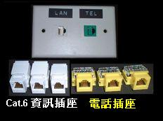
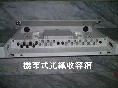

網路配線盤系列 (Patch Panels)
宏翔科技提供多樣化的 Cat 6 高密度配線盤，是機房設備理線與訊號交換的核心橋樑，確保線路整齊且具備優異的傳輸效能。
產品展示 (Product Showcase)

Cat 6 24 埠配線盤
1U 標準機架型
支援 T568A/B 線序，背面附理線架，確保線纜固定不鬆脫。

模組化空盤
高靈活性設計
可依據需求自行搭配不同顏色的資訊模組，便於線路分類管理。

機架式光纖收容箱
1U 模組化結構
高強度鋼材與粉體烤漆。支援 ST/SC/LC 面板更換，確保光鏈路極低衰減。
產品特點 (Product Features)
- 結構堅固： 採用 1.5mm SPCC 高強度鋼材製造，黑色粉體烤漆防鏽防刮。
- 傳輸規範： 符合 ANSI/TIA/EIA-568-B.2-1 Cat 6 與 ISO/IEC 11801 標準。
- 理線優化： 內建或附帶後理線架（Cable Management Bar），減少線纜下墜應力。
- 標籤管理： 正面具備清楚的數字編號與透明標籤區，方便查修與標示。
對佈線系統的測試數據有興趣？
查看測試報告參數說明 →